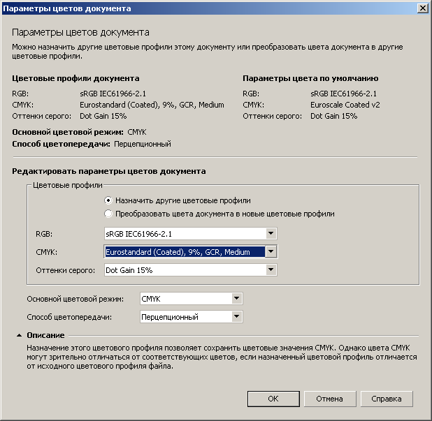

Corel X5 сам меняет цвета
XmasterX / 18.11.2011, 15:51/00:41
Форум:
Версия программы:
15.2.0.695 (hf4)
Столкнулся вот с такой проблемой:
Есть у меня макет в котором есть группа из картинок с прозрачностями, там же тени, сами битмапы RGB-шные.
А теперь фокус:
1. создаем новый документ. делаем там два квадрата с заливками CMYK 0:0:0:40 и 0:100:100:0
2. открываем тот самый макет.
3. копируем эту группу битмапов в буфер
4. вставляем в новый документ из п.1
5. и вуаля: серый поменялся на 42:27:29:9 а красный 0:99:99:0
а еще иногда он меняет один и тот же цвет но с разными содержаниями CMYK.
Например 100:60:0:0: он меняет в разных местах листа на 100:67:2:10 или 100:67:2:11 или 99:67:2:10
Глючный файлик приложил.
АХТУНГ! Я не знаю, заразно это или нет, но все эксперименты с этим файлом вы делаете на свой страх и риск :)
незаразно
как и думал, у документа левый цветовой профиль, поправьте на другой и будет щасте :)

спасибо, действительно помогает.
но вот только непоянтно, зачем сделано так, что меняются сами цвета, а не их отображение. у меня один такой файл, с непонятно поменянными заливками, ушел несколько дней назад в печать, вчера случайно обнаружил - сейчас седею потиху :(
так в глобальном смысле цвета не шибко меняются, это просто из профиля в профиль перещитываются :) ну тоесть в ушедшем файле будет либо бледнее, либо темнее, но в целом оттенок будет примерно тот же :)))
а так конечно да, засада еще та :) причем еще и профиль то самодельный судя по названию. похоже что его делали для чегото своего специального типа флекса или широкоформатки - хз.
XmasterX, всё зависит от управления цветом, при определённых настройках которого, происходят конвертации цвета при импорте, вставке, а так же открытии.
Sancho, я уже понял, что надо все-таки осилить и понять всё это управление цветом
XmasterX, загляни в раздел "Библиотека CorelDRAW", там есть специальный раздел про управление цветом и всё что касается цвета в CorelDRAW.